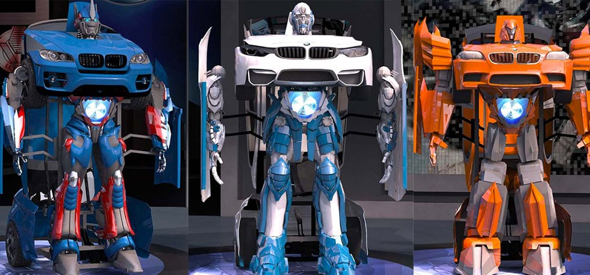

This Company Can Build You A Real Life Transformer And We Want One
Ever since I first bought a Transformer Toy back in the 90s and watched the TV shows, I always wondered if a real-life full-sized Transformer would be a possibility. My imaginations have always been far-fetched but it seems like a company in Turkey can now make it happen.
Letvision, a company from Turkey has managed to build a real-life Transformer which you can buy today. Of course, this won’t come cheap and we are sure there are plenty of billionaires out there who would be happy to buy one.
You can now own an Optimus Prime or Bumblebee as they have managed to build a fully functional prototype called Letrons. The car can transform all by itself and can also be driven with a remote control. Of course it won’t exactly like what you see in the movies as they are digital renditions; however, they are functional as much as they can be.
It still feels unreal to us as to something like this is even possible. However, this video below can erase all your doubts whether this is a hoax. There is no word as to how much this beast of a car/Transformer will cost, but since the Letrons are built on various types of BMWs it will be very costly.